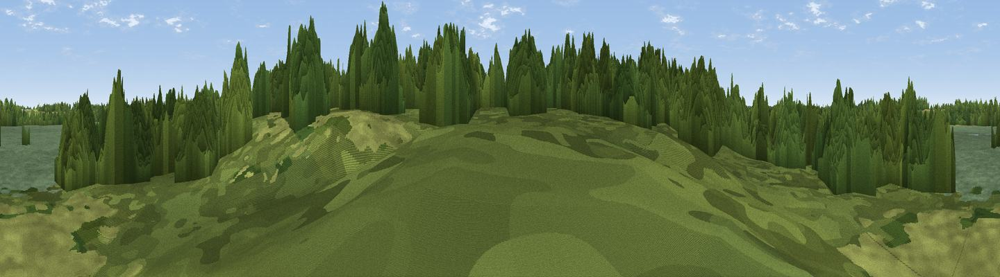

Viewpoint near Dunwich
#44868 in England · top 65% of its area beats it · near DunwichWhere it is
The exact computed spot (TM 47159 72688). Click the marker for map links.
The view, rendered

A 360° render of this exact spot computed from the terrain model, tree cover and land cover — summer colours, afternoon light, calibrated against photographs of famous viewpoints. Real trees, hedges and buildings will differ in detail.
The panorama
Grey silhouette: terrain skyline in each direction (720 bearings, Earth curvature and refraction included). Dashed green: skyline with trees (+15 m) and buildings (+8 m) as obstacles. Blue strip: how far the ground is visible on each bearing.
Where the view opens
Wedge length = distance to the farthest visible ground on that bearing (vegetation-aware). Rings at 10, 25 and 50 km.
What fills the view
51% woodland · 36% wetland · 11% grassland · 1% cropland ·
Angular shares of the visible panorama (visual magnitude), not map area. Landscape diversity 0.46 (0–1 Shannon).
Key numbers
More beautiful places nearby
The staircase of upgrades: each row has a higher view potential than everything closer. Driving times are estimates from straight-line distance, calibrated against real road routing — check an actual route before setting out.
| Place | Direction | Drive | Score |
|---|---|---|---|
| Viewpoint near Dunwich | E · 1 km | ~3 min | 39.7 |
| Gun Hill | NE · 5 km | ~11 min | 46.7 |
| Viewpoint near Paston | N · 65 km | ~87 min | 56.1 |
| Viewpoint near Mundesley | N · 65 km | ~88 min | 58.9 |
| Viewpoint near Trimingham | NNW · 68 km | ~91 min | 62.4 |
| Viewpoint near Sidestrand | NNW · 71 km | ~94 min | 65.3 |
| Viewpoint near Overstrand | NNW · 72 km | ~96 min | 67.5 |
| Viewpoint near Weybourne | NNW · 79 km | ~103 min | 68.3 |
52.29667, 1.62333 · source: osm viewpoint · position refined by local search. Computed location — check access rights before visiting.